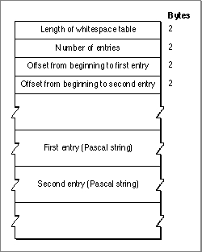

The Whitespace Table
The whitespace table contains characters that may be used to indicate white space, such as blanks, tabs, and carriage returns. Figure B-13 shows the format of the whitespace table. Each entry pointed to by the table is a Pascal string specifying a single whitespace character (which may be 1 or 2 bytes long). The strings immediately follow the
offset fields.Figure B-13 Format of the whitespace table
